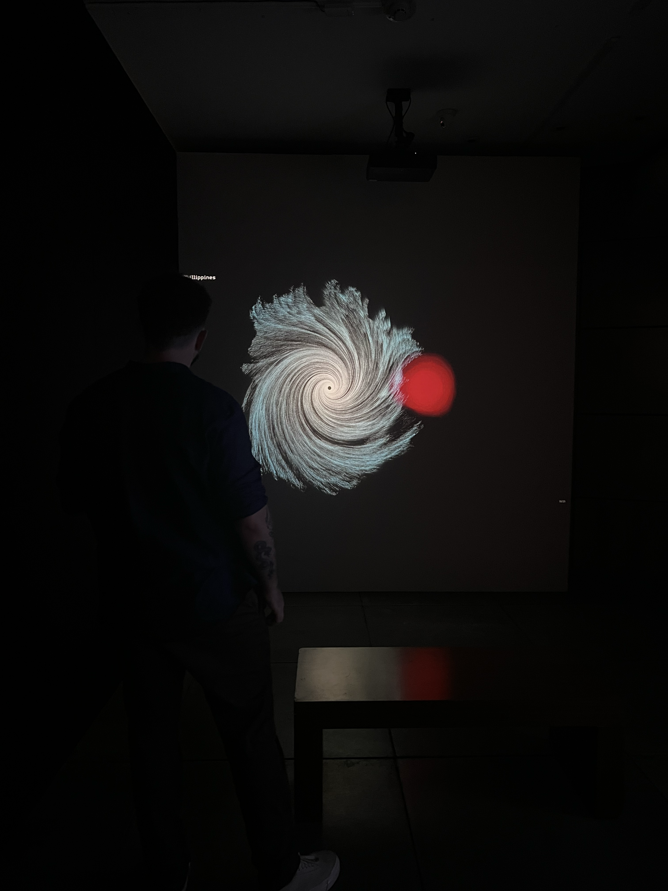
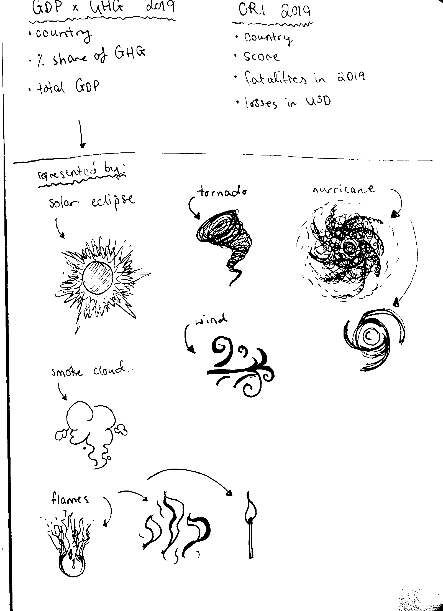
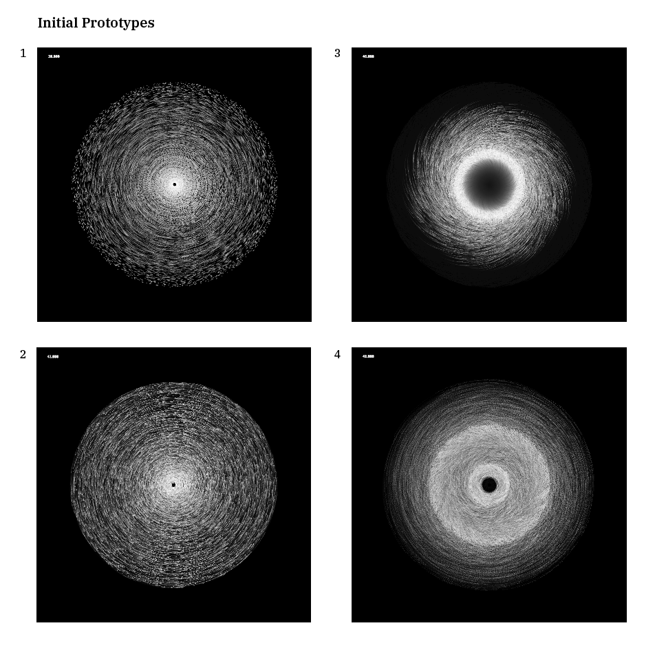
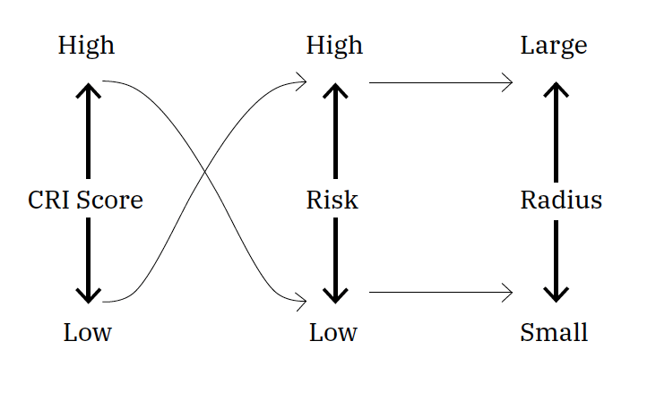
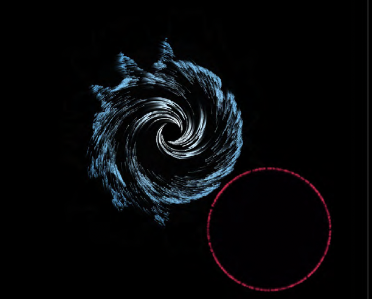
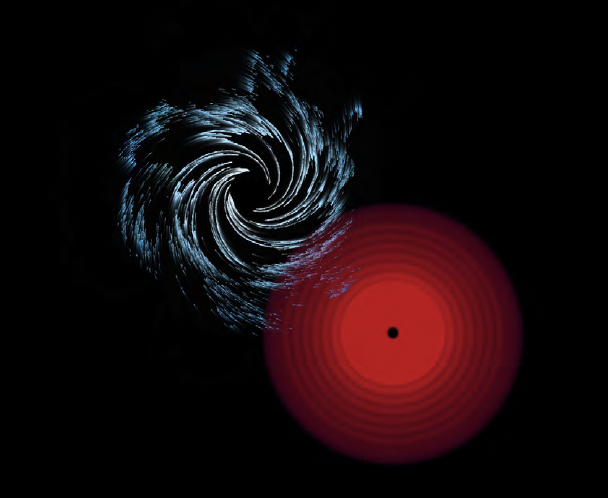
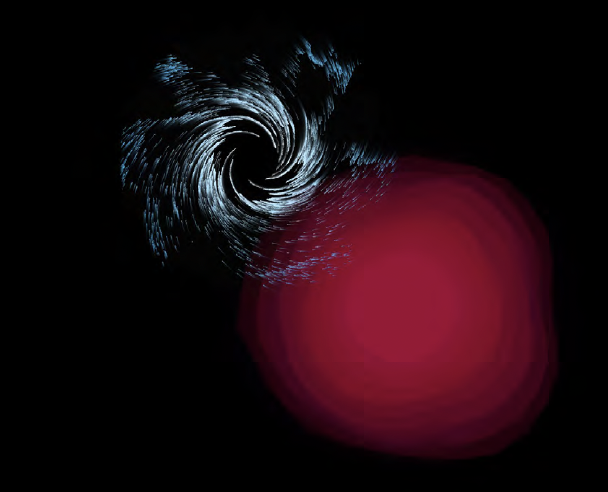
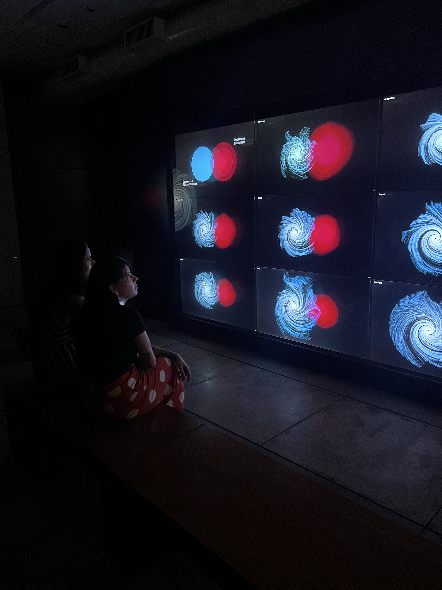
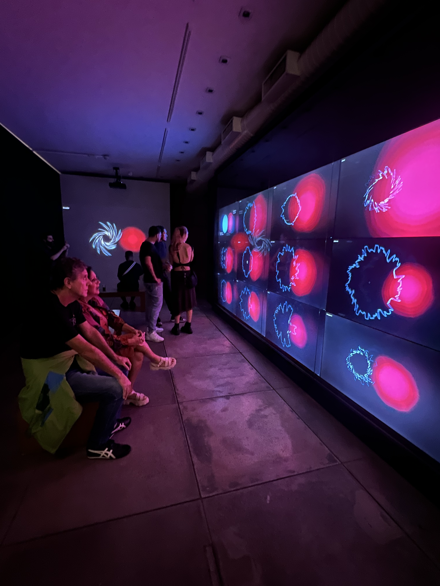
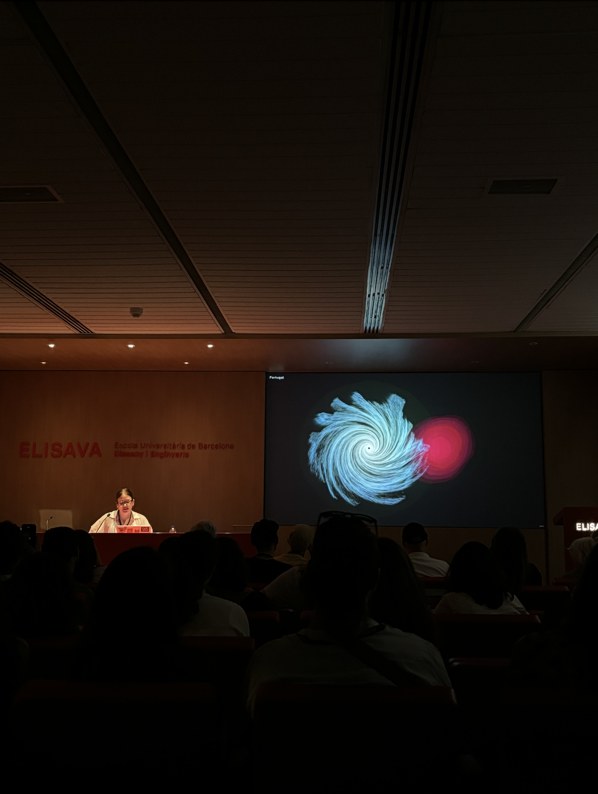

* Project Overview *

In the face of pressing global issues around climate change, data visualization is a powerful tool for making sense of complexity. The project "A Perfect Storm" aims to engage audiences
in a conversation around climate change that considers the emotional responses that the topic can trigger. Through a metaphorical approach of visually juxtoposing countries' climate
risk with their climate responsbility, we encourage critical reflection on the experience and inequities of climate change related loss.
The major conceptual development of this project was driven by readings on the relationship between climate change and capitalism. One idea about this relationship comes from Hans Baer in
his book "Global Capitalism and Climate Change" (2012), where he states that:
“In an increasingly globalized economic system, the capitalist drive for profit making and economic expansion results in
a perpetual treadmill of production and consumption heavily reliant on fossil fuels and other substances that produce
greenhouse gas emissions.” [1].
This illuminates a key issue with the capitalist model of unlimited growth in a world of finite resources. The nature of the problem is a complex and intersecting one. We therefore chose
to select data from more that one source. We leverage data from the World Bank on greenhouse gas emissions per capita [2], and the Germanwatch Global Climate Risk Index (CRI) [3].
The CRI is a weighted index of 4 measures used to evaluate the losses a country has experienced from extreme weather events connected to climate change.
The losses analyzed are economic losses (absolute losses of purchasing power parity, and losses per GDP unit), and loss of life (number of lives lost,
and deaths per 100,000 inhabitants). More information about the conceptual framing of this project is available in the VISAP Pictorical Publication.
* Project Process and Methodology *
Our ideation and prototyping process began by brainstorming nature-inspired forms that could be adapted as representational forms for the data.

We selected the hurricane as the primary metaphor for the project as it seemed the most widely recognizable, familiar
and evocative form—as well as a form which aligns particularly well with the Climate Risk Index data, as higher climate risk can be directly related in some cases to more intense storms.
After identifying the primary metaphor, we began prototyping the form with code. Using a particle system to render the animation of the hurricane as opposed to something like a line drawing
allows for a greater level of complexity and realism, scalability and ease of data integration, as well as dynamic movement.

We ended up moving forward with Prototype 1 as it's behaviour was the most realist to the way hurricanes really move—that is, particles rotating around a center point with centrifugal motion.
Once we had a working prototype of the hurricane form, we began to map the data to the visual properties of the hurricane. The Climate Risk Index (2021) is created by weighting 4 variables to provide a score
that indicates the extent of losses a coutry has experienced. Lower scores indicate countries with higher risk while higher scores indicate countries with lower risk. Given this inverse relationship,
we used a reverse mapping technique in order to map lower scores to larger radiuses, such that larger hurricanes represent higher climate risk.

We also mapped other elements of the behaviour of the hurricanes to the CRI score. The particles in the simulation have a lifespan; they extinguish at the center and reseed in the periphery. Using Perlin Noise, the particle
spawn points are distributed in strands along the perimeter (see image below). Each particle, given its initial velocity and constant attraction force ends
up in constant orbit around the center, which is what forms the eye of the hurricane. The size of the eye and intensity of rotation are also mapped to the CRI score, in order to correspond to real hurricane behaviour. More intense hurricanes have smaller eyes and rotate
faster, while weaker hurricanes have larger eyes and rotate more slowly. Using a physics engine in processing, we were able to control the forces acting on the particles with precision. Greater drag force corresponds to a higher CRI score,
and results in slower particle rotation. To preserve density, hurricanes with a larger radius also have more particles.
Turning our attention towards the emission dataset, we wanted to create an additional form for visualization that would complement, but not compete with, the hurricane form.
Using the variable "total greenhouse gas emissions per capita", we calculated the average emissions for each country between 2000-2019 in order to match the timespan of the CRI data.
Initially, we had the idea to visualize the emissions as a ring of particles pulsing in and out, but this did not hold enough visual weight against the hurricane form. Using a more solid yet abstract shape
inspired by smoke clouds and wind allowed for a better balance between the two forms.



We added interactive filtering buttons to the program so that we could view the countries displayed based on each extreme of the two datasets.
Using a split screen approach, we could see a set of 16 countries on the left, as well as select one country to view in detail on the right.
* Exhibition and Final Outputs *
In addition to the interactive program, we created a program that generates a single hurricane for any given country in the dataset. This program was used to generate high resolution videos for
displaying the project in exhibition settings. In 2024, the project was exhibited at Numerical Existence at the Oi Futuro Museum in Rio de Janeiro, Brazil.


The project was also exhibited at the University of Virginia's Data Science Institue as part of their "Data is Art" exhibition, and presented at the 2024 2CO conference hosted in Barcelona, Spain at ELISAVA University.


Ultimately, we aim to depict this metaphorical representation of climate vulnerabilities juxtaposed with global greenhouse gas emissions
to shed light on the relationship between risk and emissions at the country-level granularity. Many nations with low GHG emissions have
and will continue to experience destructive climate events that they did not cause. High-emitting nations should be held responsible for
climate damages in low-emitting nations, and many high-emitting nations can afford to. But, for high emitters, while pollution has historically
been something to bury or ship away, climate risk cannot be exported. The impacts of high emissions reverberate globally, regardless of the source,
in increasingly unpredictable and destructive ways.
* Project Video *
* Project Team *
Chloe Prock
Pedro Cruz
Gregory Gold
This project was developed as part of the Creative Climate Lab Team's work at
Northeastern University.
Video Edited by Noah Berkowitz
* References *
[1] H.A Baer, “Global Capitalism and Climate Change”, 2012.
[2] Hannah Ritchie, Pablo Rosado and Max Roser (2023), “CO₂ and Greenhouse Gas Emissions”, Published online at OurWorldInData.org. Retrieved from: 'https://ourworldindata.org/co2-and-greenhouse-gas-emissions'.
[3] David Eckstein, Vera Kunzel, Laura Schafer, for Germanwatch, “Global Climate Risk Index 2021”, and “Global Climate Risk Index 2020”. Retrieved from: https://www.germanwatch.org/en/19777 and https://www.germanwatch.org/en/17307